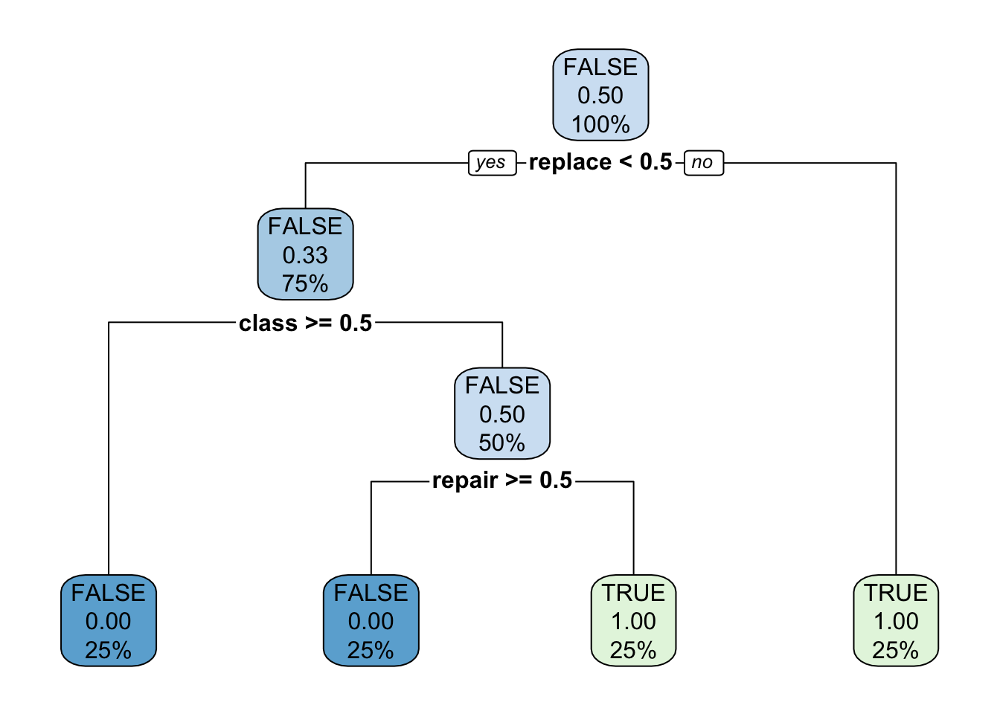

Chapter 15 Machine Learning
One of the utopian visions of an advanced audit analytics shop is the application of predictive modeling to help drive audit effectiveness. Machine learning (and data science generally) is an advanced and complex topic, and while it is rooted in statistical methods, can be summarized as “using a computer to discover patterns in a dataset”.
Machine learning (and artificial intelligence generally) employs the use of algorithms, which are statistical methods to optimize one specific goal: error. Specifically, an algorithm will try to minimize error on a training dataset - that is, each and every time the algorithm makes a prediction, it compares its estimated result against the truth. As it performs the comparison and iterates continuously to reduce the error for each individual sample, the algorithm is also ensuring it is generally applicable for an entire training population.
Similar to how you don’t need to understand the thermodynamics of a combustion engine to drive a car, you don’t need to necessarily understand how to make an algorithm to use machine learning. However, as an auditor, you still need to understand the tools and algorithm intentions - you will be a lot more fruitful using a screwdriver to insert a screw instead of a hammer.
To successfully apply machine learning, an audit practitioner needs to clearly state what needs to be predicted, with what data, and how to evaluate it. The real work is understanding the problem and the data, wrangling it into a proper format, choosing the right algorithm to apply against the data, and interpreting the results. It doesn’t take a lot to train a model (really!).
Lets use an example to help illustrate how you could use machine learning in an audit situation. We will use the following packages:
library(tidyverse)
library(tidymodels)
library(tidytext)
library(tm)
library(rpart)
library(rpart.plot)
set.seed(12345)15.1 Predict an account class
Lets say we were working on an audit to help determine if a transaction will be eventually charged against the correct account class. Specifically, lets see if we can predict if a transaction is a fixed asset, based on the description field itself.
First, we’ll get some information from our dataset, which will act as our training data. We collect a bit of information, which includes the description of a GL account, as well as whether or a specific journal entry was booked to a fixed asset account.
description <- c('New computer', 'New computer to replace old unit', 'New computer user training class', 'Computer repair')
is_fixed_asset <- as.factor(c(TRUE, TRUE, FALSE, FALSE))
je_num <- 1:length(description)
transactions <- data.frame(je_num,
description,
is_fixed_asset)
transactions## je_num description is_fixed_asset
## 1 1 New computer TRUE
## 2 2 New computer to replace old unit TRUE
## 3 3 New computer user training class FALSE
## 4 4 Computer repair FALSEWe’re going to explore the use of a tree-based basic decision tree, predicting a classification outcome. Different approaches exist to predict outcomes, including decision trees and neural networks. Predictions can either take the form of predicting a class or label via classification, or a number via regression.
A decision tree is one of the easiest to interpret, as it logically follows a flow - start a the top and answer a series of ‘yes-no’ questions to determine what the final result should be. You can see there are multiple words that describe each transaction. Computer is the running theme here, but they all seem to have different words that describe the transaction itself. We plan on using these words as our ‘yes-no’ branches to help us predict our outcomes. This is a classification problem.
Any algorithm requires the generation of features - that is, indicators within the data that the algorithm can use to leverage and predict the outcome.
15.2 Generating features
In our example, we have several sentences. Unfortunately, if we feed this into the model, the whole sentence is actually interpreted as one whole feature, which isn’t terribly useful, as the words themselves are more important. To use the individual words, we need to tokenize the sentence - that is, break each sentence into individual words, so they can be used as part of our predictions. The tidytext package is great for this, as it helps us break down each word into its own sentence.
First, lets create a lost of tokens - i.e. what was the unique word within each description, and how often did each word occur.
words <- transactions %>%
unnest_tokens(word, description) %>%
count(je_num, word, sort = TRUE)
words## je_num word n
## 1 1 computer 1
## 2 1 new 1
## 3 2 computer 1
## 4 2 new 1
## 5 2 old 1
## [ reached 'max' / getOption("max.print") -- omitted 10 rows ]We can see that each journal entry line is now repeated for each and every unique word. However, we notice some filler words, which don’t add a lot of value in our predictions. There are called ‘stop words’ which are common words in the English language - great for communicating verbally, but computers don’t need such formalities. Lets drop these stop words.
words <- transactions %>%
unnest_tokens(word, description) %>%
filter(!word %in% stop_words$word) %>% # Remove stop words.
count(je_num, word, sort = TRUE)
words## je_num word n
## 1 1 computer 1
## 2 2 computer 1
## 3 2 replace 1
## 4 2 unit 1
## 5 3 class 1
## [ reached 'max' / getOption("max.print") -- omitted 5 rows ]We can see that each journal entry line is now repeated for each and every unique word. However, its a bit difficult to see what words were shared between each journal entry, so lets lay it out wide and aggregate it so each word is in its own column, aligned with the journal entry.
wide_words <- words %>%
pivot_wider(id_cols = je_num, names_from = word, values_from = n)
wide_words## # A tibble: 4 x 8
## je_num computer replace unit class training user repair
## <int> <int> <int> <int> <int> <int> <int> <int>
## 1 1 1 NA NA NA NA NA NA
## 2 2 1 1 1 NA NA NA NA
## 3 3 1 NA NA 1 1 1 NA
## 4 4 1 NA NA NA NA NA 1Excellent, lets join this back to our dataset and do the final cleanup to start making predictions.
## je_num description is_fixed_asset computer replace unit class training user
## 1 1 New computer TRUE 1 NA NA NA NA NA
## repair
## 1 NA
## [ reached 'max' / getOption("max.print") -- omitted 3 rows ]15.3 Training the model
To create a prediction, we need to consider what we data we want to use to predict. Lets go through a few of these columns to determine what to retain and remove:
- Our
je_numis not useful because it is simply a reference, and it would not make sense that a number in a journal entry could dictate the outcome. - The original
description, in its original form, would not be useful. We do not expect to see some of these whole sentences verbatim repeated again. - The individual words that were generated from the
description, make sense to keep, as they will be part of our predictive model.
We also need to do some final cleanup:
- The
is_fixed_assetwill be what we want to predict. In this case, it should be a factor, as we are guessing a state outcome as part of the classification exercise. - Many algorithms tend to break when they see NAs. In our dataset, we understand that NA means that the word was not seen, so a zero as a replacement will suffice.
training_data <- trans_listing %>%
select(-c(je_num, description)) %>%
mutate(is_fixed_asset = as.factor(is_fixed_asset)) %>%
replace(is.na(.), 0)
training_data## is_fixed_asset computer replace unit class training user repair
## 1 TRUE 1 0 0 0 0 0 0
## [ reached 'max' / getOption("max.print") -- omitted 3 rows ]There are several different ways to call a model. We will use the tidymodels package, which helps us declare which model we plan on using, the algorithm within the model, and the outcome.
To train a model, we simply take the model we want to use (as determined above using the decision_tree() specification), the outcome is_fixed_asset, and the data source we want to train on.
## parsnip model object
##
## Fit time: 7ms
## n= 4
##
## node), split, n, loss, yval, (yprob)
## * denotes terminal node
##
## 1) root 4 2 FALSE (0.5000000 0.5000000)
## 2) replace< 0.5 3 1 FALSE (0.6666667 0.3333333)
## 4) class>=0.5 1 0 FALSE (1.0000000 0.0000000) *
## 5) class< 0.5 2 1 FALSE (0.5000000 0.5000000)
## 10) repair>=0.5 1 0 FALSE (1.0000000 0.0000000) *
## 11) repair< 0.5 1 0 TRUE (0.0000000 1.0000000) *
## 3) replace>=0.5 1 0 TRUE (0.0000000 1.0000000) *Without much fanfare, we get a model we can now use. Lets look into a bit more detail as to how the splits take place in our trained model:

Reading a decision tree takes some orienting. The way to read the root (the top level decision) is to say “is the value of replace less than 0.5?” - yes to go left, and no to go right. Another way to interpret the node is “did the word replace occur less than 0.5 times?”. If it did happen less than 0.5 times (which is 0 in our dataset), then go left. However, if the word ‘replace’ had a value of more than 0.5, which also means the word occurred at least once, then go right - in this case the predicted outcome for is_fixed_asset will be TRUE.
The branches, aka the items below the root, are decided via a gini impurity metric, where the goal is to pose a question that evenly splits the outcomes into 50/50 buckets. The more evenly split the information, the more ‘information gain’ was acquired from the split.
15.4 Making predictions from the model
Now that we have a trained model, lets try to make some predictions. Lets say we had three more sentences that were tokenized into: ‘class repair’, ‘replace repair’, ‘replace class’, ‘computer computer computer’, and simply nothing.
If we went through the process again to tokenize, our new dataset (holdout, since it was not used in training) would look like this:
holdout_data <- data.frame(matrix(nrow = 1, ncol = ncol(training_data) -1))
colnames(holdout_data) <- names(training_data)[2:ncol(training_data)]
holdout_data[1,] <- c(0, 0, 0, 1, 0, 0, 1)
holdout_data[2,] <- c(0, 1, 0, 0, 0, 0, 1)
holdout_data[3,] <- c(0, 1, 0, 1, 0, 0, 0)
holdout_data[4,] <- c(3, 0, 0, 0, 0, 0, 0)
holdout_data[5,] <- c(0, 0, 0, 0, 0, 0, 0)
holdout_data## computer replace unit class training user repair
## 1 0 0 0 1 0 0 1
## 2 0 1 0 0 0 0 1
## [ reached 'max' / getOption("max.print") -- omitted 3 rows ]And the fun part - lets run our predictions through the model we created:
## computer replace unit class training user repair .pred_class
## 1 0 0 0 1 0 0 1 FALSE
## [ reached 'max' / getOption("max.print") -- omitted 4 rows ]Some of the predictions could be conferred as such, but whats up with the zero-words example that predicted it was a fixed asset?
15.5 What to explore next
In our extremely simplistic example, we overlooked several things that would not be done on a real data set.
Training sets matter. An extremely small training set means the model hasn’t seen enough nuances in the data to understand it. Since these seven words never mapped to anything in the decision tree, it always evaluated as TRUE.
The quality of a training set also matters greatly, as the training dataset is considered truth, and its very difficult to tell a computer to ignore any mislabelled data as it won’t know its mislabelled.
A larger main dataset needs to be split into a training dataset and a test dataset. The creation of the model should be done on the training data, and its performance should be evaluated against the test dataset. The performance will allow you to evaluate just how good the model is. If this is not done, then your model is simply ‘overfitting’, which is the same as memorizing a dataset, and has no ability to generalize against a normal population.
The features used in training the model must also be the features for the prediction. For example, if we start seeing the word “Mac” instead of “Computer”, we either need to drop the word “Mac” before running our prediction, or retrain our model with these new keywords. In our case, since we’re using individual words, additional work needs to be done to align the words in the same format as our training dataset.
From an algorithm perspective, a decision tree makes only one tree as its final outcome. However, there could have been a tree design that put another feature as the root and other trees below it. One way to address this weakness is to use random forest or xgboost, which are other tree-based algorithms that make many trees and make a final model based on a combination of the best tree made (ensemble).
There are several other machine learning algorithms out there, as well as regression-based predictions. There is “no free lunch”, and no singular model will work in every situation. The beauty of a code-based approach is that you can try them all in a relatively effective manner.
If you wanted to fully explore text mining, read up Text Mining with R by Julia Silge & David Robinson.